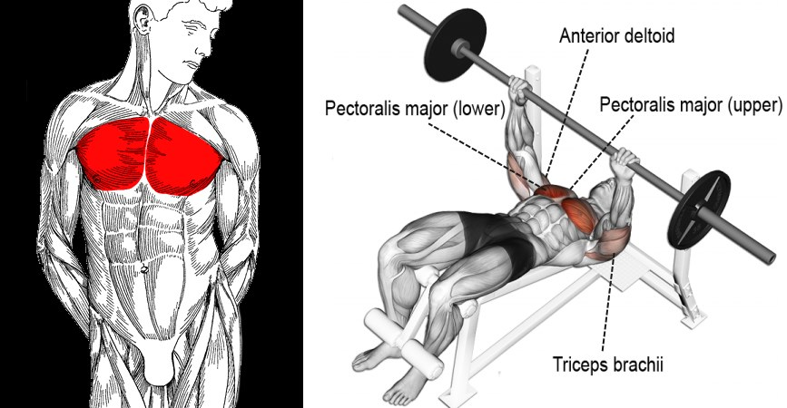
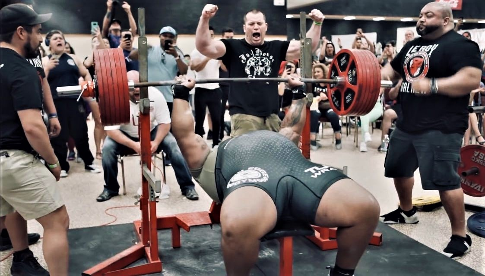

Fekvenyomás
A fekvenyomás (bench press) egy alapvető súlyemelő gyakorlat, amely a felsőtest erősítésére és izomfejlesztésére szolgál. Egyidejűleg aktiválja és igénybe veszi több fontos izomcsoportot, így hatékonyan hozzájárul az erőnlét és az izomtömeg növeléséhez. Elsősorban a mellizom (pectoralis major) dolgozik a fekvenyomás során. Ez az izom felelős a karok előre történő elmozdításáért és a karok közötti összenyomásért. Emellett a deltoid izmok is részt vesznek, különösen a váll izmai, amelyek segítenek a súly felemelésében és irányításában. A tricepsz (triceps brachii) is kulcsfontosságú szerepet játszik a fekvenyomásban, mivel ez az izomcsoport felelős a könyök kiegyenesítéséért és a súly emeléséért a felső testtel együtt. A felső hátizom (latissimus dorsi) is bekapcsolódik, mivel segít stabilizálni a törzset és támogatja a súly kontrollált leeresztését. Ezen izomcsoportok együttes munkája révén a fekvenyomás nemcsak a mellkas erősítését célozza meg, hanem a vállak, a tricepsz és a felső háti izmok fejlesztését is eredményezi. Ezáltal a gyakorlat kiválóan szolgálja a felsőtest teljes körű erősítését és formálását a súlyemelők és fitnesz rajongók számára.
Julius Maddox tartotta a férfiak abszolút fekvenyomó világrekordját. Maddox neve 2020. május 23-án vált ismertté, amikor 349,25 kg (770 font) súllyal sikeresen fekvenyomott egy nem hivatalos versenyen. Ezzel a teljesítménnyel ő lett a világrekord birtokosa ebben a súlycsoportban. Julius Maddox bemutatta az elképesztő erőnlétét és technikai tudását ezen az eseményen, és azóta is az egyik legkiemelkedőbb neve a fekvenyomás világában. Fontos megjegyezni, hogy azóta a rekordok változhatnak, és érdemes ellenőrizni az esetleges frissítéseket, mivel az idővel újabb sportolók és versenyek jelenhetnek meg a színen, változtatva a korábbi eredményeket.
